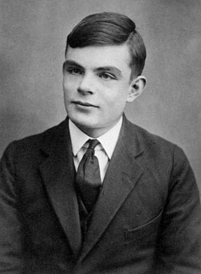

Alan Mathison Turing, né le 23 juin 1912 à Londres et mort le 7 juin 1954 à Wilmslow, est un mathématicien et cryptologue britannique, auteur de travaux qui fondent scientifiquement l'informatique.
Pour résoudre le problème fondamental de la décidabilité en arithmétique, il présente en 1936 une expérience de pensée que l'on nommera ensuite machine de Turing et des concepts de programme et de programmation, qui prendront tout leur sens avec la diffusion des ordinateurs, dans la seconde moitié du XXe siècle. Son modèle a contribué à établir la thèse de Church, qui définit le concept mathématique intuitif de fonction calculable.
Durant la Seconde Guerre mondiale, il joue un rôle majeur dans la cryptanalyse de la machine Enigma utilisée par les armées allemandes : l'invention de machines usant de procédés électroniques, les bombes, fera passer le décryptage à plusieurs milliers de messages par jour. Mais tout ce travail doit forcément rester secret, et ne sera connu du public que dans les années 1970. Après la guerre, il travaille sur un des tout premiers ordinateurs, puis contribue au débat sur la possibilité de l'intelligence artificielle, en proposant le test de Turing. Vers la fin de sa vie, il s'intéresse à des modèles de morphogenèse du vivant conduisant aux « structures de Turing (en) ».
Poursuivi en justice en 1952 pour homosexualité, il choisit, pour éviter la prison, la castration chimique par prise d'œstrogènes. Il est retrouvé mort par empoisonnement au cyanure le 8 juin 1954 dans la chambre de sa maison à Wilmslow. La reine Élisabeth II le reconnaît comme héros de guerre et lui accorde une grâce royale à titre posthume en 2013.
Cliquez ici pour accéder au journal de bord... à vos risques et péril.